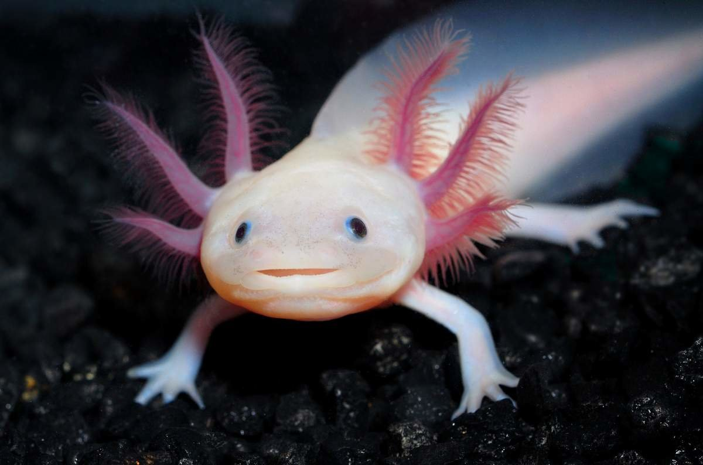

Милые аксолотли. Основная инфа об аксолотлях.
Ссылка на википедию Аксолотль кушает(YouTube)
Аксоло́тль — неотеническая личинка некоторых видов амбистом, земноводных из семейства амбистомовых отряда хвостатых.
Простыли словами - маленькие земноводные зверьки.
Особенности.
- У них на голове три пары наружных жабр, торчащих в разные стороны.
- Он похож на крупного головастого тритона.
- У аксолотля большая голова и широкий рот, но маленькие глазки.
- Кажется, будто он всё время улыбается.
- Если аксолотль потерял часть тела, он способен восстановить её.
- Они вырастают до размера в 30 см.
- Аксолотли - хищники.
Аксолотли сложны в содержании. В частности, это связано с трудностями поддержания нужного температурного режима в условиях квартиры, особенно летом. Для нормального самочувствия и стабильной работы иммунной системы аксолотлям требуется вода с температурой ниже 21 °C. Их содержание при более высоких температурах ведет к проблемам с аэрацией, частым заболеваниям и смерти. Аксолотли представляют опасность друг для друга и для небольших рыб, а большие рыбы представляют опасность для них, так как могут объедать жабры аксолотлей. Для содержания аксолотлей требуется чистая вода, свободная от хлора, нейтральная или чуть жесткая, около 50 литров на молодую особь, 100 на взрослую. Перенаселение аквариума может привести к тому, что более крупная особь убьёт более мелкую. Фильтрация воды отличается от той, которая нужна аквариумным рыбам. Аксолотлей нельзя кормить обычным кормом для рыб или мясом (субпродуктами) теплокровных животных, так как аксолотли не могут переварить соответствующие белки. Брать аксолотля в руки нежелательно, так как температура неохлаждённых рук человека слишком высока для него.
Аксолотль может быть пяти цветов:
- Голубой
- Золотой
- Розовый
- Коричневый
- И синий
Галерея аксолотлев<3
